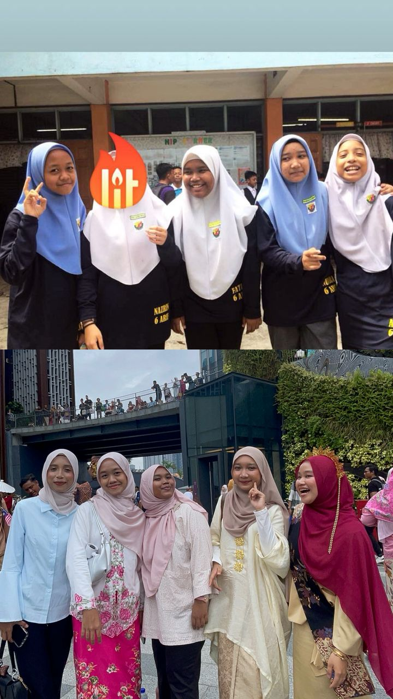
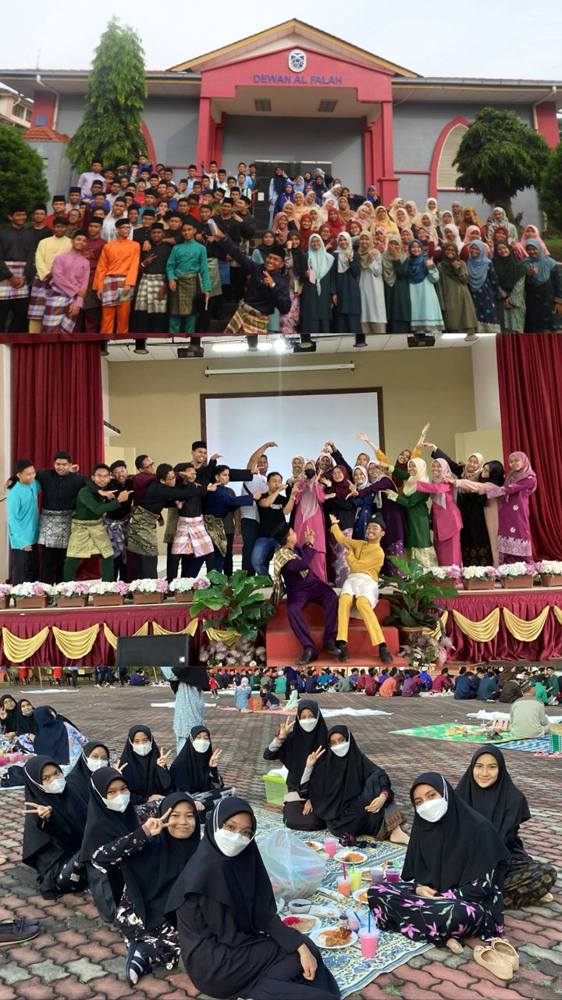
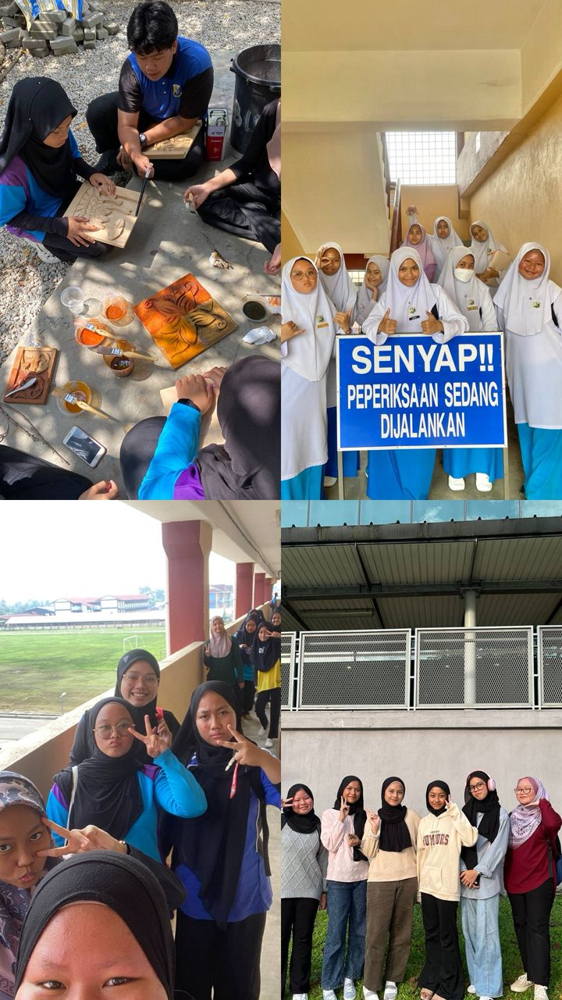
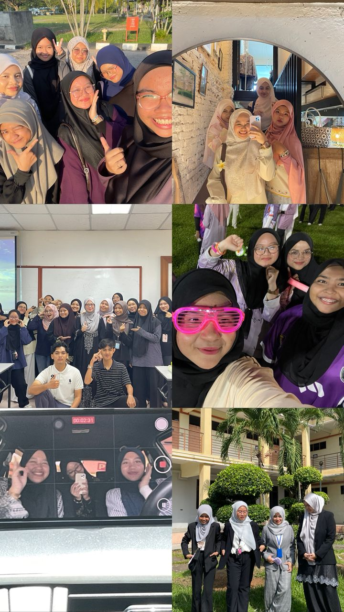

These are my friends from Primary school. We grew up together, played games, and enjoyed our childhood days.

These are my friends from Secondary school. We studied together, joined school activities, and shared many fun memories.


These are my friends from UiTM Kedah. We study together, work on group projects, and share campus life experiences.
